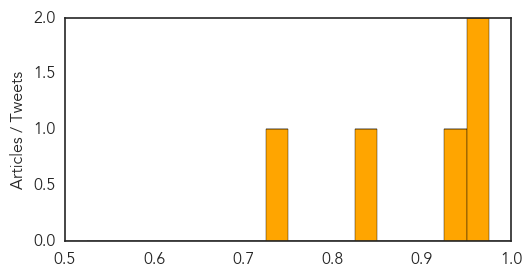
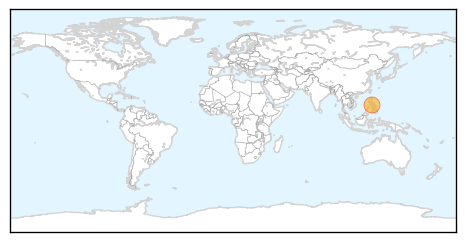
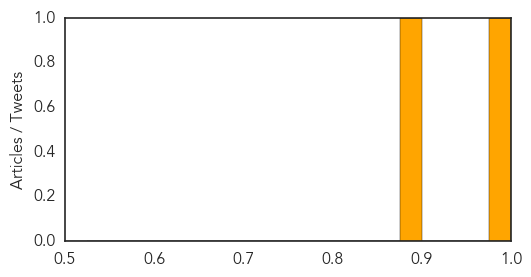

Dengue Fever
30-Day Web Trend
2 alerts, 0 warnings

30-Day Twitter Trend
2 alerts, 0 warnings

Article Locations

Article Confidences
Top Articles:
- 0.961
- Southern Africa Weekly Report Map, 24 - 30 June 2014 - Mozambique
- 0.956
- Plagued By Dengue Fever, Sri Lanka Looks to the Weatherman - Sri Lanka
- 0.941
- Private hospitals overflowing with dengue patients
- 0.841
- Observe ‘dry days’: Minister
- 0.749
- Malaria parasite alters host body odor to entice mosquitoes
Top Tweets:
-
No tweets found for Jun 30, 2014
Pertussis
30-Day Web Trend
5 alerts, 0 warnings

30-Day Twitter Trend
0 alerts, 0 warnings

Article Locations
Article Confidences
Top Articles:
Top Tweets:
-
No tweets found for Jun 30, 2014